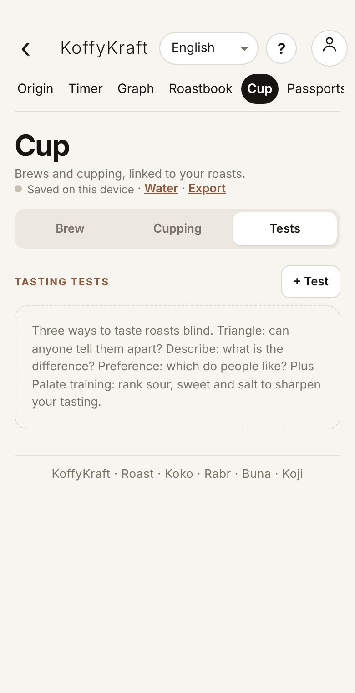

Why it matters
A buyer, a café or a visitor may ask where a coffee came from and how it was made. When each record points to the one before, the answer is already there.
A subject, followed along the whole path
Who entered it, what changed, and checks that warn but never overrule you.
Why it matters
A buyer, a café or a visitor may ask where a coffee came from and how it was made. When each record points to the one before, the answer is already there.
What it is
What the app does today:
Seen fromRoast at a glanceNothing gets lostGuidance, not guarantee
What it is
Step 6
Read the privacy notice (the link in the sentence beside the tick box). It says what is kept, for how long, and what happens to your records if KoffyKraft closes. If you agree, tick the box and tap Send sign-in code. You will see 6-digit code sent to your email, and a box for the code.

Seen fromOn your phone, step 6Getting set up
Tip
Staff who enter records for you can sign in on their own phone with the same account email. Each record still shows who entered it.
Seen fromOn your phone
Why it matters
Working on the phone first means a bad signal never stops a harvest being written down. An account or a backup file means a lost phone never takes a season with it.
Seen fromOn your phoneNothing gets lost
Step 13 · Log fertiliser, water and work
Open Field log (an account is needed). Pick the tab: Nutrients, Water, Plant health or Work done, then ＋ New entry. Choose the place and date and fill what you know. For fertiliser, the grade gives the nutrients per hectare.

Watch out
A weight in the name box. If the kilos go into the left box, the app reads them as a name: the total does not grow and no Total cherry line appears. Look for the total after every row; if it is missing, move the number into the kg box.

Seen fromLogging a harvestKilos carry forward
Step 7 · Correct a mistake
Tap the harvest to open it, change it, tap Save. At the bottom, Entered by… opens the record's history: who entered it, and each change with its date, who made it, the field and its old and new value.

Seen fromLogging a harvest, step 7
Step 8 · Remove a harvest entered twice
If a whole harvest should not be there, open it and tap Void. The app asks for a reason. A voided harvest leaves the lists but is kept, and Voided at the end of the list can restore it. Anything linked to it keeps its link.
Seen fromLogging a harvest, step 8
Why it matters
A buyer who trusts your records needs to know they were not quietly changed. The change kept beside the record, with who and when, is what makes it worth trusting.
Seen fromLogging a harvest
Watch out
Out more than in. If a step's Out kg is bigger than its In kg, the app says what to check. It does the same if the first step takes more than its harvests weighed. An example: Pulping: out 90 kg is more than in 85 kg. It never changes your numbers. Usually a number went into the wrong box.
Seen fromProcess runsKilos carry forward
Watch out
An end time earlier than the start shows in red on the step. Fix the end time, or tap Still running.
Seen fromProcess runs
Watch out
A lot with no process and nothing under Bought from still saves, with a message: Not linked to a process. Pick its process, or fill Bought from to mark it bought in. Without one of the two, nobody can tell where it came from.
Seen fromGreen lotsOne coffee, one chain
Watch out
A green weight above what the run gave out saves too, with Green weight … kg is more than the process gave out. Your number is kept. Check the scale, or the run's last step.
Seen fromGreen lotsKilos carry forward
What it is
A lot passport is a public page for one lot, with a QR for the bag. It shows the chain from plot to harvest, run, green lot and roast. Each entry is signed by the phone that made it and linked to the one before, and each day's entries are stamped into the Bitcoin public record through OpenTimestamps. Anyone who scans the QR sees every check run in their own browser.
Seen fromPassports and selling into EuropeOne coffee, one chain
What it is
The passport page says plainly what it proves: the entries were made by the phones shown, in this order, and have not been changed since the day they were stamped. What it cannot prove is that what was typed in was true. Honest records, photos and buyers who come back do that part.
Seen fromPassports and selling into EuropeGuidance, not guarantee
Step 1 · Choose the name on my passports
Open Passports from the menu. Under Name shown on your passports, type your farm, estate or roastery name and tap Save. Your email is never shown.

Seen fromPassports and selling into Europe, step 1Getting set up
Step 3 · Decide what the public sees
Under What the public sees, the farm location and plot outline, and notes written on records, are off unless you tick them. A buyer in Europe may need the outline; tick it only when they do.
Step 4 · Seal it
Tap Sign and seal. Each record is signed on this phone and linked to the one before. You will see the lot's page: its public link with Copy link, Print labels and Open passport, and a line saying whether all entries check out and the weights add up.

Seen fromPassports and selling into Europe, step 4One coffee, one chain
Watch out
The public stamp is not instant. The public page says it is waiting for the daily stamp: each day's entries are stamped the next morning, about 6 am India time.
Step 5 · Seal new records later
After a new roast, or a change to a record already sealed, open the lot and tap Seal changes. The open record's button reads Passport: seal changes while something is waiting.
Step 6 · Prove a photo is the original
Under Photos, Add photo fingerprints. The photo stays on this phone; only its fingerprint and your note go into the passport. Later anyone can check, on the public page, that a photo you send them is the original and unchanged.
What it is
The passport adds up the weights along the chain. Weights add up means nobody sent or roasted more than they held.
Seen fromPassports and selling into EuropeKilos carry forward
Step 9 · Take a passport off the public page
Under Withdraw, Withdraw passport removes the details from the public page. Fingerprints already stamped stay in the public record; that is what makes the passport trustworthy.
Watch out
The EU plot file holds the exact plot outline. Share it only with the buyer who needs it. Wages and workers' names never go into these files.
Seen fromPassports and selling into EuropeOne coffee, one chain
What it is
The Legality pack puts the producer, land papers, licences, taxes and the team on one page for a buyer. The team shows as a count, never names or wages. It is gathered from Origin, Land and dues, and Team and wages, with gaps shown. It lists what is recorded; it is not a certificate.
Seen fromPassports and selling into EuropeGuidance, not guarantee
Step 10 · Taste roasts blind
The Tests tab holds blind tasting tests. Triangle asks whether anyone can tell them apart. Describe asks what the difference is. Preference asks which people like. There is also palate training that ranks sour, sweet and salt. Tap + Test.

What it is
Records show who entered something, so it can be trusted or corrected. Nothing here rates or ranks anyone's work.
Seen fromRunning the business
Step 2 · Take the daily muster
On Muster, pick the Date and Place, then tap P (Present), H (Half day), A (Absent), L (Leave) or O (weekly Off) for each worker and save. The phone's GPS is kept with the muster. Hourly workers get their hours under Hours, overtime and notes.

Seen fromRunning the business, step 2
Watch out
A changed mark or pay rate asks for a reason, and the old one is kept in the log beside it.
Seen fromRunning the business
Step 6 · Ask to be paid
Open a saved sale and tap Ask for payment. It makes a message with the amount, due date and your bank, and a UPI QR the buyer scans (UPI is India's instant bank payment). Send it by WhatsApp or the share sheet.
Seen fromRunning the business, step 6
Step 8 · Keep land papers and dues
Open Land and dues. Land keeps each land record (survey number, area, ownership, documents). Tax and dues keeps land tax, insurance and loans with the next due date; record each payment when it is made. Licences keeps renewal dates. Due soon lists what falls due in the next 60 days.

Seen fromRunning the business, step 8Guidance, not guarantee
Step 9 · Add or edit the names forms offer
Open Add or edit names (from Home or Account). Each list, such as Products, Buyers, Suppliers and payees, Transporters, Units and Row kinds, holds the names every drop-down offers, so everyone picks the same name. Add a name and Add; Edit renames, Hide takes it off the lists. A name typed under "Other" joins the list on its own.

What it is
Everything you enter is saved on this phone first. With an account, you choose what also goes to your private cloud: section by section, nothing, only what you pick, or everything. Removing something from the cloud never deletes it from this phone.
Seen fromYour recordsNothing gets lost
Step 5 · Export a list for a spreadsheet
Most lists have Export for CSV (Excel or Google Sheets) or JSON: Origin, Cup, the Roastbook and the Map. Roasts also go out as Artisan and Cropster files, plots as GeoJSON and KML.
Step 9 · Delete my account
On Account, open Delete my account. Save a backup file first. Choose the Wait before deleting (24 hours, 3 days, 7 days or 30 days) and tap Email me a deletion code. Entering the code deletes your account and all your cloud records after the wait; you can cancel until then. What is on this phone stays until you clear it.

Watch out
Published passports stay readable for the buyers who hold them, even after you delete your account. Ask KoffyKraft to take your name off them.
Seen fromYour records
What it is
The privacy notice says what is kept, for how long, and what happens to your records if KoffyKraft closes. You agree to it when you first sign in.
Seen fromYour recordsNothing gets lost
What it is
A number in the wrong box. Weights that do not add up are flagged when you save. Examples: a basket total that never appears, a step whose Out kg is more than its In kg, a green weight above what the run gave. The app never changes your numbers; it tells you what to check. Open the record, move the number, save. The change is kept beside the record.
Seen fromWhen something goes wrong, and the words usedKilos carry forward
What it is
Something is wrong in the app. Every page has Feedback at the bottom: an idea, a problem, a question or thanks. No account needed; leave a contact only if you want a reply.